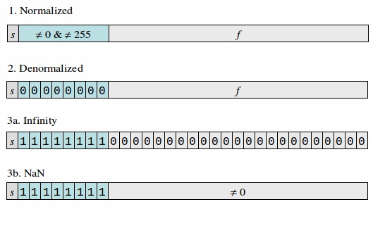

C Introduction
C Milestones
Originally developed by Dennis Ritchie in early 70s for use with Unix as a general system programming language.
In 1978, Kernighan and Ritchie publish The C Programming Language, popularly known as K&R1. C implementations based on book specification known as K&R1 C.
1980 standardization by ANSI and ISO; changes include function prototypes. Known as C89 or C90. K&R2 describes C89.
1990s standardization efforts led to C99; changes include variable-length arrays, inline functions.
2000's standardization efforts led to C11; changes include multithreading support, anonymous structures and unions, noreturn functions.
Distinguishing Features
Strongly typed (compiler checks type compatibility) but allows programmer to selectively override type checking.
Allows programmer to manipulate data at the bit-level.
Support for directly manipulating memory addresses. This distinguishes C from higher-level programming languages where memory is abstracted out.
Allows programmer total control over memory allocation.
Uses a very limited macro system (compile-time text substitution).
Higher level programming languages are often implemented by being translated into C, at least initially.
Expressions vs Statements
Expressions return a value which can be stored in a variable. Example of C expressions include arithmetic operators (involving operators like +, -, *, /, %), comparison expressions (with operators like ==, !=, <, <=, >, >=), logical expressions (involving operators like &&, ||, ! with 0 interpreted as false, non-0 as true), bit expressions (involving operators like &, |, ~, >>, <<), assignment expressions (involving operators like =, +=, *=, etc).
Statements do not have a value. Example of C statements are
if,for,while,do,switch.
All programming languages have some kind of expression construct, but not all programming languages have statement constructs.
Data
In any programming language there are two kinds of data:
- Primitive Data
Data which has no internal structure advertized by the language. In C, this includes various flavors of integers and real numbers as well as pointers (C does also allow getting at the internal structure, but this is a low-level feature).
- Composite Data
Data which is a collection of other data. In C, this includes arrays (sequence of data of the same type) and structures/unions (collections of data of possibly different types).
Ultimately, all data entities are represented as a sequence of bytes. In C, the number of bytes taken up by any data entity x is given by the expression sizeof(x).
C Integers
Various flavors of integers (in order of non-decreasing size):
-
short At least 2 bytes.
-
int At least 2 bytes, can be 4 or 8 depending on machine.
-
long At least 4 bytes, can be 8 depending on machine.
-
long long At least 8 bytes.
Can have modifier signed or unsigned. Default is signed.
If unsigned used without a type, then type is int.
Integer Declarations with Initializers
//signed by default short answer = 42; //signed: usually 2 bytes int next = answer + 1; //signed: often 4 bytes long twice = 2 * answer; //4 or 8 bytes long long half = answer/2; //at least 8 bytes long value = 99L; //use of a long literal //explicitly declared unsigned unsigned short s1 = 22; unsigned short s2 = 1 << 15; //ok unsigned short s3 = 1 << 16; //may overflow unsigned u = 99; //type defaults to int short s4 = 1 << 15; //signed: may overflow //to negative
Characters in C
C does not really support characters or strings.
A variable declared with type
char, is declaring a 1-byte integer.If a variable is declared as a char, without a signed or unsigned modifier, then it's signed-ness is undefined.
C does support character literals enclosed within single quotes. These integer value equal to code of character in the local character encoding (for example, 'A' has integer value 65 in the ASCII encoding).
Character literals support escapes as in '\n' newline, '\t' tab and '\0' NUL character.
Since characters are merely integers, arithmetic can be performed with them as in
char c; ... c - '0', but the results are not portable in that they may vary with different character encodings.
Char Declarations
Chars are always 1 byte.
char c1 = 'A'; //65 in ASCII char c2 = 'B'; //66 in ASCII char c3 = c1 + 1; //same value as c2.
C Arrays
Arrays are a fundamental abstraction in many programming languages which abstract out the random-access property of the main memory in current computer technology.
In C, arrays are declared using square brackets after the name of the array.
int a[3]; int b[] = { 1, 2, 3 }; Employee employees[numEmployees];
A C string is an array of characters terminated by a NUL character '\0'.
char hello[] = "hello"; //array of 6 char's
C arrays are closely related to pointers (more about that later).
Integer Sum Program
In sum.c:
#include <stdio.h> static int acc = 123; int main() { int values[] = { 2, 5, -9, }; for (int i = 0; i < sizeof(values)/sizeof(values[0]); i++) { int value = values[i]; acc += value; } printf("%d\n", acc); return 0; }
Integer Sum Program Log
Compiling:
$ gcc -g -Wall -std=c11 sum.c -o sum
-g allows debugging compiled program.
-Wall used for turning on reasonable warnings.
-std=c11 allows use of C11 features.
-o sum creates executable in file sum (default is a.out).
Run using:
$ ./sum 121 $
Integer Sum Program Discussion
acc is declared outside of any function. It is loosely referred to as a global variable.
Variables declared outside any function have lifetime equal to that of the entire program.
If a variable is declared with the static qualifier, then it has lifetime equal to that of the entire program but is visible only to the subsequent code in the same compilation unit (file).
If a variable is declared with the extern qualifier, then it has lifetime equal to that of the entire program and is visible to the entire program. If there is no static specifier, then the declaration defaults to be extern.
In current programming practice, global variables are regarded as evil and should be avoided as far as possible. Read-only globals are not as bad as read-write globals.
Integer Sum Program Discussion Continued
Variables declared within a brace-delimited block are visible only within that block and (if there is no static qualifier) retain their value only during a single execution of that block.
Specifically, variables declared within a function are visible only within that function and (if there is no static qualifier) retain their value only during a single activation of that function.
These kind of auto-variables are invaluable in implementing recursive functions where multiple activations of a function are alive simultaneously.
int factorial(int n) { return (n <= 0) ? 1 : n * factorial(n - 1); } //factorial(4): n has values 4, 3, 2, 1, 0.
Integer Sum Program Discussion Continued
Usually, best practice is to always provide an initial value for a variable when it is declared.
Array values[] is initialized with initial values enclosed within braces.
Could also be declared as
int values[3] = { 2, 5, -9 };but the size would be redundant.Best practice is to omit the size of the array and let it be determined by the length of the initializer.
Integer Sum Program Discussion Continued
Since the array values[] has 3 elements, we could have coded the
for-loop as:for (int i = 0; i < 3; i++) { ... }
If we decided to add another element to values[], we would also need to change the loop bound to 4.
A very important rule in programming is Don't Repeat Yourself (DRY). Specifically, you should avoid situations where changing one part of a program necessarily requires changing another part because the second part depends on the first part.
Integer Sum Program Discussion Continued
The use of the complex expression
sizeof(values)/sizeof(values[0])avoids a DRY violation.The expression sizeof(values) gives the total number of bytes occupied by the values[] array and sizeof(values[0]) gives the total number of bytes occupied by the values[0] element. Hence the quotient gives the number of elements in the values[] array.
Integer Representation
The C integer types can be regarded as abstract types which model a finite subset of the infinite set of all integers. These abstract types permits the usual arithmetic operations +, -, *, /, %, with results consistent with usual arithmetic (subject to size restrictions).
However, C has operators like bitwise-and &, bitwise-or |, left-shift << and right-shift >> in which the representation of integers is no longer abstract. So it is necessary to understand the internal representation of integers.
Decimal Positional Notation
In positional notation, the value of a digit depends on its position in the number. Specifically, a decimal integer \(d_{n-1}d_{n-2}\ldots d_1d_0\) represents the number:
\[ 10^{n-1}\times d_{n-1} + 10^{n-2}\times d_{n-2} + \ldots + 10^1\times d_1 + 10^0\times d_0 \]For example,
\[123 == 1\times 10^2 + 2\times 10^1 + 3\times 10^0 \]Positional notation is a big win over additive notations like Roman numerals as the value of a represented number increases exponentially with the length of the representation.
Positional Notation for a General Base
For a general base \(B\) and digits \(0, 1, \ldots B-1\) in base-\(B\), the value of an \(n\)-digit integer \(b_{n-1}b_{n-2}\ldots b_1b_0\) in base-\(B\) is given by:
\[ B^{n-1}\times b_{n-1} + B^{n-2}\times b_{n-2} + \ldots + B^1\times b_1 + B^0\times b_0 \]For example, 0x123 (base-16) is
\[1\times 16^2 + 2\times 16^1 + 3\times 16^0 \]which is 291$, while 0123 (base-8) is
\[1\times 8^2 + 2\times 8^1 + 3\times 8^0 \]which is 83.
Common Bases used in Programming
Decimal base is almost always the default. Example: 75
Base-2 binary numbers are commonly used within computers but usually too verbose for human use. Example: 01001011 binary which is 75 decimal. Not in standard C, available as gcc extension 0b01001011.
Base-16 commonly used as it is easy to convert to/from binary. Digits 0 .. 9 have usual meanings, A .. F (can also be lower-case) represent values 10 .. 15. An example of a C hexadecimal literal is 0x4B (or 0x4b) equal to decimal 75.
Base-8 was used earlier when word-lengths were multiples of 3 bits (PDP-8: 12-bits) but not popular currently. In C, any integer starting with a leading 0 is octal. For example, C interprets 0113 as an octal literal equal to decimal 75. This can be a gotcha for the unwary.
Representations
| Binary | Decimal | Hex | Oct |
|---|---|---|---|
| 0000 | 0 | 0x0 | 00 |
| 0001 | 1 | 0x1 | 01 |
| 0010 | 2 | 0x2 | 02 |
| 0011 | 3 | 0x3 | 03 |
| 0100 | 4 | 0x4 | 04 |
| 0101 | 5 | 0x5 | 05 |
| 0110 | 6 | 0x6 | 06 |
| 0111 | 7 | 0x7 | 07 |
Representations Continued
| Binary | Decimal | Hex | Oct |
|---|---|---|---|
| 1000 | 8 | 0x8 | 010 |
| 1001 | 9 | 0x9 | 011 |
| 1010 | 10 | 0xA | 012 |
| 1011 | 11 | 0xB | 013 |
| 1100 | 12 | 0xC | 014 |
| 1101 | 13 | 0xD | 015 |
| 1110 | 14 | 0xE | 016 |
| 1111 | 15 | 0xF | 017 |
Octal, Hexadecimal Conversions in C
In bases.c:
static void bases(long values[], int nValues) { for (int i = 0; i < nValues; i++) { long v = values[i]; printf("number: %ld == 0%lo == 0X%lX == 0x%lx\n", v, v, v, v); } }
Octal, Hexadecimal Conversions in C: main()
In bases.c:
int main() { long values1[] = { 75, 123, 99 }; long values2[] = { 075, 0x123, 0x99 }; bases(values1, sizeof(values1)/sizeof(values1[0])); bases(values2, sizeof(values2)/sizeof(values2[0])); return 0; }
Octal, Hexadecimal Conversions in C Log
$ ./bases number: 75 == 0113 == 0X4B == 0x4b number: 123 == 0173 == 0X7B == 0x7b number: 99 == 0143 == 0X63 == 0x63 number: 61 == 075 == 0X3D == 0x3d number: 291 == 0443 == 0X123 == 0x123 number: 153 == 0231 == 0X99 == 0x99 $
Signed Magnitude Representation of Signed Integers
Signed magnitude representation:
Integer represented using a single sign bit (0 positive, 1 negative) and an unsigned magnitude.
+75 has 8-bit signed magnitude representation 01001011; -75 has 8-bit signed magnitude representation 11001011;
0 has two representations: +0 00000000 and -0 10000000.
Not used in practice, but useful when interpreting floating point representation as integers.
Two's Complement Representation
Two's complement is the representation used currently for representing signed integers. Given bits \(b_{n-1}b_{n-2}\ldots b_1 b_0\), the MSB is used as a sign bit with weight \(-2^{n-1}\). The overall value is:
\[ b_{n-1} \times -2^{n - 1} + b_{n-2} \times 2^{n - 2} \ldots b_1 \times 2^1 + b_0 \times 2^0 \]+75 has 8-bit 2's complement representation 01001011; -75 has 8-bit 2's complement representation 10110101 which is -128 + 53.
To negate a 2's complement number, form its bit-complement and add 1 to the result. For example, -75 == (~01001011 + 1) == (10110100 + 1) == 10110101.
Two's Complement Examples
Examples of 8-bit 2's complement numbers:
1000 0000 == -128
1000 0001 == -127
1000 0010 == -126
1000 0011 == -125
...
1111 1111 == -1
0000 0000 == 0
0000 0001 == 1
...
0111 1111 == 127
Output Binary Representation
In out-bits.c:
static void out_bits(short value, FILE *out) { fprintf(out, "%d == 0x%x == 0%o == 0b", value, value, value); int nBits = CHAR_BIT * sizeof(value); unsigned mask = 0x1 << (nBits - 1); for (int i = 0; i < nBits; i++) { char c = (mask & value) ? '1' : '0'; mask >>= 1; fprintf(out, "%c", c); if (i % 4 == 3 && i != nBits - 1) fprintf(out, "_"); } fprintf(out, "\n"); }
Output Binary Representation: main()
In out-bits.c:
int main() { short values[] = { 0, 16, 255, 1<<(sizeof(short)*CHAR_BIT - 2), -1 }; for (int i = 0; i < sizeof(values)/sizeof(values[0]); i++) { out_bits(values[i], stdout); } return 0; }
Output Binary Representation: Log
./out-bits 0 == 0x0 == 00 == 0b0000_0000_0000_0000 16 == 0x10 == 020 == 0b0000_0000_0001_0000 255 == 0xff == 0377 == 0b0000_0000_1111_1111 16384 == 0x4000 == 040000 == 0b0100_0000_0000_0000 -1 == 0xffffffff == 037777777777 == 0b1111_1111_1111_1111
Two's Complement Features
Asymmetric. With n-bits, non-negative numbers range from \(0 \ldots 2^{n-1}-1\) but the negative numbers range from \(-1 \ldots -2^{n - 1}\). There is no positive counterpart to \(-2^{n-1}\). This can result in subtle bugs.
Each representable number has a unique representation. No multiple representations for 0. -0 == (0xFFFFFFFF + 1) == 0x00000000`.
Note that an unsigned \(n\)-bit number can represent values in the range \(0 \ldots 2^n - 1\). So the largest unsigned number is 1 more than twice the largest positive 2's complement number. This is something to keep in mind when converting between signed and unsigned representation.
C Integer Literals
As discussed previously, integer values can be specified in octal (leading 0), hexadecimal (leading 0x or 0X) or decimal (default). However, that does not say anything about which integer type that literal corresponds to.
short and char integers always promoted to int integers within expressions. Hence short, char are primarily storage types.
A literal with l or L suffix is a long. Presence of a long literal within an expression will force expression to be evaluated as a long.
C Integer Literals Continued
A integer literal with a u or U suffix is unsigned. Example 1024U.
A integer literal with a ll or LL suffix is long long. Example: 1024LL.
The size and unsigned suffixes can be combined in either order: 1024UL or 1024Lu are the same.
Bit Operators
- &
Bitwise-and of two integers. 0x1234 & 0xF0F0 results in 0x1030.
- |
Bitwise-or of two integers. 0x1234 | 0xF0F0 results in 0xF2F4.
- ^
Bitwise-xor of two integers. 0x1234 ^ 0xF0F0 results in 0xE2C4.
- ~
Bitwise complement. ~0x1234 results in 0xEDCB.
Shift Operators
- <<
i << n is the value of i shifted to the left by n bits with 0 being shifted in from the right. 0x3 << 2 is 0xC. Can be used for multiplying by powers-of-2.
- >>
i >> n is the value of i shifted to the right by n bits. If i is unsigned, then 0 is shifted in from the left; otherwise the sign bit is shifted in. Example: 0xC >> 2 is 0x3.
Bit and Shift Operator Examples
Assume unsigned int u and bits are numbered starting with LSB being bit 0, next bit being 1, etc.
Bitwise operators have unintuitive precedence; always parenthesize to avoid ambiguity.
Non-zero iff bit 0 of u is 0: ((u & 0x1) == 0).
Non-zero iff bit 2 of u is 1: ((u & 0x4) != 0).
Set LSB of u to 1 without changing other bits: u |= 0x1.
Set LSB of u to 0 without changing other bits: u &= ~0x1.
Value of 2nd hexet (bits 4 - 7) of u: (u & 0xf0) >> 4 or (u >> 4) & 0x0f.
Non-zero iff MSB of u is 1: (u & (~0u >> 1)) != 0. Note u suffix in 0u absolutely necessary.
Counting # of 1s in an int
int count_ones(unsigned v) { int ones = 0; for (unsigned i = v; i > 0; i >>= 1) { if (i & 1) ones++; } return ones; }
Counting # of 1s in an int Continued
int main() { unsigned values[] = { 123, 32, 255 }; for (int i = 0; i < sizeof(values)/sizeof(values[0]); i++) { unsigned v = values[i]; printf("# of ones in %u (0x%x) is %d\n", v, v, count_ones(v)); } return 0; }
Counting # of 1s in an int Log
$ ./count-1s-1 # of ones in 123 (0x7b) is 6 # of ones in 32 (0x20) is 1 # of ones in 255 (0xff) is 8 $
Counting # of 1s in an int Discussion
The loop starts with i set to the value v within which we want to count the number of 1-bits.
Basic C does not have boolean type; the value 0 is treated as false, any non-zero value is treated as true. Hence ones is incremented if i & 1 is non-zero; i.e., ones is incremented iff the least-significant bit (LSB) of i is 1.
After each iteration of the loop, i is shifted to the right by 1 position. Thus the 1's in i make their way towards the LSB.
The loop terminates when i is 0; i.e., there are no more 1's to count and ones contains the count of 1's in the original value v.
The number of iterations in the loop will depend on the position of the leftmost 1 in the original value v.
Counting # of 1s in an int: 2nd Attempt
In count-1s-2.c we reduce number of loop iterations to number of 1's in original value:
int count_ones(unsigned v) { int ones = 0; while (v > 0) { v &= v - 1; ones++; } return ones; }
Counting # of 1s in an int: 2nd Attempt Discussion
If v is 101000, then v - 1 is 100111. Hence v & (v - 1) is 100000. By assigning this back to v, we knock-out the rightmost 1 in v in each loop iteration.
Since we knock-out the rigthmost 1 in each loop iteration and increment ones on each loop iteration and terminate the loop when no 1's remain in v, at loop termination ones will contain the number of 1's in the original value of v.
Note that even though the parameter value v is being changed within count_ones(), that change will not be reflected in the caller of count_ones(). That is because when parameters are passed in C, a copy of the actual parameter is passed. This is referred to as call-by-value.
Big Endian versus Little Endian
In what order are multi-byte quantities (like integers or floats) stored in memory?
Two common solutions: litte endian versus big endian (details follow). Some machines can choose dynamically ("bi-endian").
Usually not visible to programmer on an individual machine but is an issue when sending binary data between machines.
Many current networks mandate big-endian.
Little Endian
- Little Endian
Least significant byte stored in low address, next least significant byte stored in next higher address, .., most significant byte stored in high address. For example, if 0x01234567 stored at 0x100:
Address: 0x100 0x101 0x102 0x103 Value: 0x67 0x45 0x23 0x01Intel machines little endian.
Big Endian
- Big Endian
Most significant byte stored in low address, next most significant byte stored in next higher address, .., least significant byte stored in high address. For example, if 0x01234567 stored at 0x100:
Address: 0x100 0x101 0x102 0x103 Value: 0x01 0x23 0x45 0x67IBM, Sun big endian.
Endian Program
In endian.c:
int main() { union { //memory for i and bytes overlap int i; char bytes[sizeof(int)]; } u = { 0x123456 }; printf("int = 0x%x\n", u.i); for (int i = 0; i < sizeof(int); i++) { printf("bytes[%d] at %p is 0x%02x\n", i, &u.bytes[i], u.bytes[i]); } return 0; }
Endian Program Log on x86
$ ./endian int = 0x123456 bytes[0] at 0x7fff565cfe00 is 0x56 bytes[1] at 0x7fff565cfe01 is 0x34 bytes[2] at 0x7fff565cfe02 is 0x12 bytes[3] at 0x7fff565cfe03 is 0x00 $
Endian Program Log on Sparc
bingsuns2% ./endian int = 0x123456 bytes[0] at ffbff900 is 0x00 bytes[1] at ffbff901 is 0x12 bytes[2] at ffbff902 is 0x34 bytes[3] at ffbff903 is 0x56 bingsuns2%
Endian Program Discussion
The members of a union are assigned at the same memory location. Hence u.i and u.bytes occupy the same memory location. This allows us to look at the individual bytes in int i.
The & unary operator returns the address of its operand. Hence &u.bytes[i] returns the address of the i'th byte.
Note that for x86, the most significant byte is stored at a higher address than the least significant byte. Hence x86 is a little-endian architecture.
Note that for sparc, the least significant byte is stored at a higher address than the least significant byte. Hence sparc is a big-endian architecture.
Signed, Unsigned Addition
The operation of addition is the same for both signed and unsigned numbers with 2's complement.
Consider 3 bits numbers: Unsigned: 0 to 7; Signed -4 to 3.
Each following table shows addition of all combinations of a left operand with two right operands.
Signed result indicated by a signed result in parentheses.
Overflow indicated by a *.
Signed, Unsigned Addition Tables
Addition table for N + 0b000 and N + 0b001:
\[\begin{array}{|l|*{4}{l|}} \hline \mathbf{Rand1 / Rand2} &\mbox{000} = 0\;(\;\;\,0)&\mbox{001} = 1\; (+1) \\ \hline \mbox{000} = 0\; (\;\;\,0)&\mbox{000} = 0\; (\;\;\,0)&\mbox{001} = 1\; (+1) \\ \mbox{001} = 1\; (+1) &\mbox{001} = 1\; (+1) &\mbox{010} = 2\; (+2) \\ \mbox{010} = 2\; (+2) &\mbox{010} = 2\; (+2) &\mbox{011} = 3\; (+3) \\ \mbox{011} = 3\; (+3) &\mbox{011} = 3\; (+3) &\mbox{100} = 4\;(-4^*) \\ \mbox{100} = 4\; (-4) &\mbox{100} = 4\; (-4) &\mbox{101} = 5\; (-3) \\ \mbox{101} = 5\; (-3) &\mbox{101} = 5\; (-3) &\mbox{110} = 6\; (-2) \\ \mbox{110} = 6\; (-2) &\mbox{110} = 6\; (-2) &\mbox{111} = 7\; (-1) \\ \mbox{111} = 7\; (-1) &\mbox{111} = 7\; (-1) &\mbox{000} = 0^*\; (\;\;\,0) \\ \hline \end{array} \]Signed, Unsigned Addition Tables Continued
Addition table for N + 0b010 and N + 0b011:
\[\begin{array}{|l|*{4}{l|}} \hline \mathbf{Rand1 / Rand2}& \mbox{010} = 2\; (+2)& \mbox{011} = 3\; (+3) \\ \hline \mbox{000} = 0\; (\;\;\,0) &\mbox{010} = 2\; (+2)&\mbox{011} = 3\; (+3) \\ \mbox{001} = 1\; (+1) &\mbox{011} = 3\; (+3) &\mbox{100} = 4\; (-4^*) \\ \mbox{010} = 2\; (+2) &\mbox{100} = 4\; (-4^*) &\mbox{101} = 5\; (-3^*) \\ \mbox{011} = 3\; (+3) &\mbox{101} = 5\; (-3^*) &\mbox{110} = 6\; (-2^*) \\ \mbox{100} = 4\; (-4) &\mbox{110} = 6\; (-2) &\mbox{111} = 7\; (-1) \\ \mbox{101} = 5\; (-3) &\mbox{111} = 7\; (-1) &\mbox{000} = 0^*\;(\;\;\,0)\\ \mbox{110} = 6\; (-2) &\mbox{000} = 0^*\;(\;\;\,0)&\mbox{001} = 1^*\; (+1) \\ \mbox{111} = 7\; (-1) &\mbox{001} = 1^*\; (+1) &\mbox{010} = 2^*\; (+2) \\ \hline \end{array} \]Signed, Unsigned Addition Tables Continued
Addition table for N + 0b100 and N + 0b101:
\[\begin{array}{|l|*{4}{l|}} \hline \mathbf{Rand1 / Rand2}& \mbox{100} = 4\; (-4)& \mbox{101} = 5\; (-3) \\ \hline \mbox{000} = 0\; (\;\;\,0) &\mbox{100} = 4\; (-4) &\mbox{101} = 5\; (-3) \\ \mbox{001} = 1\; (+1) &\mbox{101} = 5\; (-3) &\mbox{110} = 6\; (-2) \\ \mbox{010} = 2\; (+2) &\mbox{110} = 6\; (-2) &\mbox{111} = 7\; (-1) \\ \mbox{011} = 3\; (+3) &\mbox{111} = 7\; (-1) &\mbox{000} = 0^*\; (\;\;\,0) \\ \mbox{100} = 4\; (-4) &\mbox{000} = 0^*\; (\;\;\,0^*) &\mbox{001} = 1^*\; (+1^*) \\ \mbox{101} = 5\; (-3) &\mbox{001} = 1^*\; (+1^*) &\mbox{010} = 2^*\; (+2^*) \\ \mbox{110} = 6\; (-2) &\mbox{010} = 2^*\; (+2^*) &\mbox{011} = 3^*\; (+3^*) \\ \mbox{111} = 7\; (-1) &\mbox{011} = 3^*\; (+3^*) &\mbox{100} = 4^*\; (-4) \\ \hline \end{array} \]Signed, Unsigned Addition Tables Continued
Addition table for N + 0b110 and N + 0b111:
\[\begin{array}{|l|*{4}{l|}} \hline \mathbf{Rand1 / Rand2}& \mbox{110} = 6\; (-2)& \mbox{111} = 7\; (-1) \\ \hline \mbox{000} = 0\; (\;\;\,0) &\mbox{110} = 6\; (-2) &\mbox{111} = 7\; (-1) \\ \mbox{001} = 1\; (+1) &\mbox{111} = 7\; (-1) &\mbox{000} = 0^*\; (\;\;\,0) \\ \mbox{010} = 2\; (+2) &\mbox{000} = 0^*\; (\;\;\,0) &\mbox{001} = 1^*\; (+1) \\ \mbox{011} = 3\; (+3) &\mbox{001} = 1^*\; (+1) &\mbox{010} = 2^*\; (+2) \\ \mbox{100} = 4\; (-4) &\mbox{010} = 2^*\; (+2^*) &\mbox{011} = 3^*\; (+3^*) \\ \mbox{101} = 5\; (-3) &\mbox{011} = 3^*\; (+3^*) &\mbox{100} = 4^*\; (-4) \\ \mbox{110} = 6\; (-2) &\mbox{100} = 4^*\; (-4) &\mbox{101} = 5^*\; (-3) \\ \mbox{111} = 7\; (-1) &\mbox{101} = 5^*\; (-3) &\mbox{110} = 6^*\; (-2) \\ \hline \end{array} \]Typical Ranges for Unsigned Types
----------+--------+--------------------------- | # bits | Min. | Max Value | +---------+--------+--------------------------+ | 8 | 0 | 255| | 16 | 0 | 65,535| | 32 | 0 | 4,294,967,295| | 64 | 0 |18,446,744,073,709,551,615| ----------+--------+---------------------------
Typical Ranges for Signed Types
+-----+--------------------------+-------------------+ |#bits| Min. Value | Max Value | +-----+--------------------------+-------------------+ | 8 | -128| 127| | 16 | -32,768| 32,767| | 32 | -2,147,483,648| 2,147,483,647| | 64 |-9,223,372,036,854,775,808| 9,223,372,036,854,| | | | 775,807 | +-----+--------------------------+-------------------+
Finding Integer Sizes in C
#include <stdio.h> int main() { //concatenation of adjacent string literals //%ld not portable; modern C allows %zu for sizeof() printf("sizeof(char) = %ld, sizeof(short) = %ld, " "sizeof(int) = %ld sizeof(long) = %ld, " "sizeof(long long) = %ld\n", sizeof(char), sizeof(short), sizeof(int), sizeof(long), sizeof(long long)); return 0; }
Integer Sizes: Edited Log
sizeof(char) = 1, sizeof(short) = 2, sizeof(int) = 4 sizeof(long) = 8, sizeof(long long) = 8
Powers of \(\sim\) 1000
Since \(2^{10} =\) 1024 which is close to 1000, \(2^{20} =\) 1,048,576 which is close to 1,000,000, we can use kilo and mega notation, but need to distinguish between powers of 1000 and powers of 1024.
Powers of 1000: normal metric notation: kB, MB, GB, etc.
Powers of 1024: IEC units: KiB, MiB, GiB, etc.
Write program to show quantities associated with different units.
Kilo Powers Program Log
Note overflow for zetta and yotta.
#metric units $ ./kilo-powers 1000**1 = 1 kilobyte (kB) which is 1000 bytes 1000**2 = 1 megabyte (MB) which is 1000000 bytes 1000**3 = 1 gigabyte (GB) which is 1000000000 bytes 1000**4 = 1 terabyte (TB) which is 1000000000000 bytes 1000**5 = 1 petabyte (PB) which is 1000000000000000 bytes 1000**6 = 1 exabyte (EB) which is 1000000000000000000 bytes 1000**7 = 1 zettabyte (ZB) which is 3875820019684212736 bytes 1000**8 = 1 yottabyte (YB) which is 2003764205206896640 bytes
Kilo Powers Program Log Continued
#iec units 1024**1 = 1 kibibyte (KiB) which is 1024 bytes 1024**2 = 1 mebibyte (MiB) which is 1048576 bytes 1024**3 = 1 gibibyte (GiB) which is 1073741824 bytes 1024**4 = 1 tebibyte (TiB) which is 1099511627776 bytes 1024**5 = 1 pebibyte (PiB) which is 1125899906842624 bytes 1024**6 = 1 exbibyte (EiB) which is 1152921504606846976 bytes 1024**7 = 1 zebibyte (ZiB) which is 0 bytes 1024**8 = 1 yobibyte (YiB) which is 0 bytes $
Kilo Powers Program: Type Declaration
/** Package unit-name and its abbreviation. */ typedef struct { const char *name; const char *abbr; } Unit;
Kilo Powers Program: Metric Data
static Unit metricUnits[] = { { "kilobyte", "kB" }, { "megabyte", "MB" }, { "gigabyte", "GB" }, { "terabyte", "TB" }, { "petabyte", "PB" }, { "exabyte", "EB" }, { "zettabyte", "ZB" }, { "yottabyte", "YB" }, };
Kilo Powers Program: IEC Data
static Unit iecUnits[] = { { "kibibyte", "KiB" }, { "mebibyte", "MiB" }, { "gibibyte", "GiB" }, { "tebibyte", "TiB" }, { "pebibyte", "PiB" }, { "exbibyte", "EiB" }, { "zebibyte", "ZiB" }, { "yobibyte", "YiB" }, };
Kilo Powers Program: Guts
static void outUnits(unsigned base, Unit units[], int nUnits, FILE *out) { unsigned long long v = 1; for (int i = 0; i < nUnits; i++) { v *= base; fprintf(out, "%d**%d = 1 %s (%s) " "which is %llu bytes\n", base, i + 1, units[i].name, units[i].abbr, v); } fprintf(out, "\n"); }
Kilo Powers Program main() Function
int main() { outUnits(1000u, metricUnits, sizeof(metricUnits)/sizeof(metricUnits[0]), stdout); outUnits(1024u, iecUnits, sizeof(iecUnits)/sizeof(iecUnits[0]), stdout); return 0; }
Kilo Powers Program Discussion
A C struct allows packaging related data together.
In C, typedef defines a name for some type. So the program uses the name Unit to refer to a particular struct type.
Note the use of the u suffix on 1000u and 1024u to pass an unsigned base value to outUnits().
IEC units have not really caught on. In practice, GB may mean "gigabyte" or "gibibyte", depending on context. In commercial contexts, memory sizes are often stated in IEC units, disk sizes in metric units but no guarantees.
Booleans
Basic C does not have any boolean type.
C99 introduced stdbool.h header with suitable definitions for true and false.
Comparison operators <, <=, >, >=, ==, != return result 1 for true and 0 for false.
Logical operators &&, ||, ! treat 0 as false, all non-0 values as true.
C has a single falsy value: 0. All values other than 0 are truthy.
Comparing Numeric Expressions in C
An expression which compares two numeric expressions is known as a relational expression.
- ==, (!=)
Returns 1 iff two expressions are equal (not-equal), 0 otherwise. Do not use with floating point types:
Example:
if (i != 0) b = x/i;.Watch out for incorrect use of =. For example,
if (i = 0) b = 1 else b = x/i;will always divide by i because of use of = instead of == in comparison. Some programmers protect for this case by writingif (0 == i)which will cause a compilation error if written incorrectly asif (0 = i).
Comparing Numeric Expressions in C Continued
- <, (>)
Returns 1 iff the left-hand expression is less-than (greater-than) the right-hand expression, 0 otherwise. Example:
for (int i = 0; i < 10; i++) { ... }.- <=, (>=)
Returns 1 iff the left-hand expression is less-than-or-equal-to (greater-than-or-equal-to) the right-hand expression, 0 otherwise. Example:
for (int i = 9; i >= 0; i--) { ... }.
Can also use on right-hand-side of assignment as in:
int aLT10 = (a < 10);.
Short-Circuit Logical Operators
The operators || (logical-or) and && (logical-and) evaluate operands from left-to-right, but stop ("short-circuit") the evaluation immediately once the result is known for sure; i.e. they may not evaluate their 2nd operand if the result is determined by the value of the first operand.
- A || B
If expression A evaluates to non-zero, then return 1 without ever evaluating expression B. Otherwise return 0 if B too evaluates to 0, otherwise return 1.
Example: In
if (x == 0 || y/x > 10) { }, short-circuit property of || avoids division-by-0 error.
Short-Circuit Logical Operators Continued
- A && B
If expression A evaluates to 0, then return 0 without ever evaluating expression B. Otherwise return 1 if B too evaluates to non-zero, otherwise return 0.
Example: Search for first element of a[n] which is equal to key:
for (int i = 0; i < n && a[i] != key; i++) { ... }Note that because of short-circuit evaluation, when i == n code does not examine a[i] at all, thus avoiding an index-out-of-bounds error.
Logical Not
- ! A
Return 0 if A is non-zero, 1 when A is 0.
Can avoid using ! by applying DeMorgan's law: example, instead of
!(x <= 10 || y == 5)use(x > 10 && y != 5), but use ! if it is clearer in a particular context.Idiom !!x can be used to convert from x which may not be strictly 0 or 1 to a strict 0 or 1 value.
Logical Operators versus Bitwise Operators
Do not confuse bit-wise operators &, |, ^, ~ with logical operators &&, ||, ! which operate on pseudo-boolean values.
Logical operators && and || have short-circuit semantics and may not evaluate their 2nd operand; bitwise-operators & and | always evaluate both operands.
Assignment operators &=, |= and ^= refer to the bitwise operators. No assignment operators for logical operators && and ||.
If-then-else Expressions
x = (cond) ? expr1 : expr2 equivalent to
if (cond) x = expr1 else x = expr2;
Note it is possible to chain conditions together as in
x = (cond1) ? expr1 : (cond2) ? expr2 : expr3which is equivalent tox = (cond1) ? expr1 : ((cond2) ? expr2 : expr3), but can easily turn ugly.I tend to overuse this in my code compared to normal practice.
Sum of Integer Command-Line Arguments Log
Not particularly robust in checking for errors:
$ gcc -g -Wall -Wextra -std=c11 sum-args.c -o sum-args $ ./sum-args 22 -3 5 24 #silently ignore garbage at end of values $ ./sum-args 22 -3x 5 24 #silently ignore totally garbage values $ ./sum-args 22 -3x 5 garbage 3 27 $
Sum of Integer Command-Line Arguments
In sum-args.c:
/** Output sum of integer command-line arguments on stdout. */ int main(int argc, const char *argv[]) { int sum = 0; for (int i = 1; i < argc; i++) { sum += atoi(argv[i]); } printf("%d\n", sum); return 0; }
Sum of Integer Command-Line Arguments Discussion
Recollect that a C string is a array of char terminated by a NUL character '\0'.
First argument to main() argc gives the number of command-line arguments including the name of the program.
The notation char *str can be regarded as declaring str to be a string (strictly speaking, is is declaring str to be a pointer to a char).
Hence const char *argv[] declares argv to be an array of strings; the const means that the strings cannot be changed.
Sum of Integer Command-Line Arguments Discussion Continued
atoi() is a function declared in included file <stdlib.h> which converts a string (which should contain only characters corresponding to decimal digits) to the internal representation of a C integer.
\n is an escape sequence used within C-strings to denote a newline character.
The first argument for printf() should be a C-string denoting a C string. % characters are used as escape sequences within a format string to introduce format specifiers used to print the next corresponding argument.
More Robust Sum Program: Log
$ gcc -g -Wall -Wextra -std=c11 robust-sum.c \
-o robust-sum
$ ./robust-sum 22 -3 5
24
#produce error message for bad arguments
$ ./robust-sum 22 -3x 5
bad argument -3x not integer: ignored
27
#produce error message for bad arguments
$ ./robust-sum 22 -3x 5 garbage 3
bad argument -3x not integer: ignored
bad argument garbage not integer: ignored
30
$
A More Robust Program to Sum Arguments
/** Output sum of integer command-line arguments on stdout. */ int main(int argc, const char *argv[]) { int sum = 0; for (int i = 1; i < argc; i++) { char *p; int n = strtol(argv[i], &p, 10); if (*p == '\0') { sum += n; }
A More Robust Program to Sum Arguments Continued
else {
fprintf(stderr,
"bad argument %s not integer: ignored\n",
argv[i]);
}
}
printf("%d\n", sum);
return 0;
}Arrays
A C array basically just represents the address of an area of memory; i.e., a C array is basically a pointer.
It follows that a C array does not track the number of elements it has. The programmer needs to track the number of elements in the array. Some alternatives:
Have another variable which explicitly stores the number of elements in the array.
Mark the end of the array using some kind of sentinel value; i.e. a value which cannot occur as a legal value in the data stored in the array. For example, if an array stores only non-negative integers, then -1 could be used as a sentinel.
The number of elements in the array is known ahead of time as some fixed value (like say 27) and all code is written assuming that size. Usually a bad idea.
When Arrays are Pointers
Peter Van Der Linden in Deep C Secrets:
The use of an array name in an expression (not declaration) which is not an operand of sizeof() is treated by the compiler as a pointer to the first element of the array.
A subscript is always equivalent to an offset from a pointer.
An array name in the declaration of a function parameter is treated by the compiler as a pointer to the first element of the array. This is because arrays are passed by reference for efficiency reasons (all non-array data are passed by value).
Pointers and Arrays
Only operations for an array are getting its size using sizeof() or obtaining a pointer to element 0 of the array. All other array ops are really pointer ops.
a[i] is equivalent to *(a + i) which is equivalent to *(i + a) which is equivalent to i[a].
When used within an expression, an array is equivalent to a pointer to its first element.
int a[10], i; //a is array of 10 int's; i is int. a[i]; //i'th element of a. *(a + i); //also i'th element of a. *(i + a); //also i'th element of a. i[a]; //also i'th element of a.
Array of char and Pointer to char Are Different
char *msg = "hello";:msg: [ ... ] ----> ['h'|'e'|'l'|'l'|'o'|'\0']
sizeof(msg)will be the size of a pointer (i.e. a memory address). Typically, this is 4 or 8.To compute the address of msg[i], the compiler will need to produce code to add the value of i to the value stored at memory location msg.
Array of char and Pointer to char Are Different Continued
char msg[] = "hello";msg: ['h'|'e'|'l'|'l'|'o'|'\0']
sizeof(msg)will be 6.To compute the address of msg[i], the compiler will need to produce code to add the value of i to the address of msg.
It is wrong to have one file define
char msg[] = "hello";and another file declareextern char *msg;as the compiler will generate different access code.
Multi-Dimensional Arrays
C has only 1-dimensional arrays.
Elements of arrays can themselves be arrays, which permits array notation like a[i][j] for multiple dimensions for static and auto (but not dynamically malloc()'d) arrays.
When declaring (not defining) a multi-dimensional array, first (leftmost) dimension can be unspecified as in a[][10][3].
Impossible to have multi-dimensional array as function parameters without all but the leftmost dimension specified. So int a[][] is not allowed as a function parameter.
Declarations versus Definitions
A declaration provides information about an entity like a variable or function.
A definition provides a definite value for that entity.
An entity can have multiple declarations as long as they are consistent.
There can only be a single definition for an entity.
Often there is only a single statement which combines both a declaration with a definition.
Declarations vs Definitions Example
//declare function which takes unspecified parameters void quadratic_roots(); //second consistent declaration //parameter names optional in declaration void quadratic_roots(double, double b, double c, double *, double *);
Declarations vs Definitions Example
//function definition void quadratic_roots( //parameter definitions/declarations double a, double b, double c, double *root1, double *root2) { double discr; //uninitialized variable definition discr = b*b - 4*a*c; assert(discr >= 0); double sqroot = sqrt(discr); //definition with init *root1 = (-b + sqroot) / (2 * a); *root2 = (-b - sqroot) / (2 * a); }
Pointer Sum Annotated Log
# 12 + 13 + -12 $ ./ptr-sum 12 13 -0xc 13 $ ./ptr-sum 0 # 64 + -171 + ** + ** $ ./ptr-sum 0100 -0xAb 12C 099 -107 $
Pointer Sum
In ptr-sum.c:
/** Sum numeric strings [*start, *end), silently ignoring * any strings which are not valid C integer literals. */ long ptr_sum(const char **start, const char **end) { long sum = 0; for (const char **p = start; p != end; p++) { char *endP; long v = strtol(*p, &endP, 0);//0: c-syntax ints if (*endP == '\0') sum += v; } return sum; }
Pointer Sum Continued
int main(int argc, const char *argv[]) { printf("%ld\n", ptr_sum(&argv[1], &argv[argc])); return 0; }
Pointer Sum Discussion
strtol() needs to return a pointer to the first non-legal character found in the integer string pointed to by its first argument.
Since return value is being used to return the value of the integer, this pointer must be returned using a function parameter.
Since the actual arguments passed to a function are copies of the value passed by the caller a function cannot affect the value of a parameter in its caller.
The only way to have a function return a value via an argument is to have the caller pass a pointer to that value and have the function return the value using the pointer.
Since strtol() needs to return a pointer via its argument, the second parameter is passed as pointer to a pointer, i.e. &endP.
Declaration of strtol() is
long strtol(const char *str, char **end, int base).
Pointer Sum Discussion Continued
In ptr_sum(), start is address of first string. Since a string has type char *, start is declared char **.
end is address one past that of the last string; i.e. end is an exclusive limit.
p is initialized to start of type const char **. Hence *p has type const char * which is the string being sent as the first argument to strtol()
p++ will point to next string.
Since end is an exclusive limit, the loop quits when p == end.
Declaration of Command-Line Arguments in main()
Typical declaration
const char *argv[]for second argument of main(), declares argv to be an array of pointers to constant char (typically, constant strings) with each element containing a command-line argument string.argv[1], argv[2] etc. have type of the array element: namely pointer to
const char, i.e.const char *; Hence &argv[1] and &argv[2] have type pointer to pointer toconst char, i.e.const char **.
Representation of Command-Line Arguments
Given command-line ./ptr-sum 12 13 -0xc, we have argv array as follows:
argv[0]: [ ] -----> [ '.' '/' 'p' 't' ... 'u' 'm' '\0' ] argv[1]: [ ] -----> [ '1' '2' '\0' ] argv[2]: [ ] -----> [ '1' '3' '\0' ] argv[3]: [ ] -----> [ '-' '0' 'x' 'c' '\0' ] argv[4]: [ NULL ] #usually
Standard I/O Example wc(1) Program
wc.c contains a simple word-count (wc(1)) program:
enum { COUNT_CHARS = 7 }; static int nCTotal = 0; /* total # of chars */ static int nWTotal = 0; /* total # of words */ static int nLTotal = 0; /* total # of lines */
Standard I/O Example wc(1) Program
void wc(const char *fName, FILE *f) { int inWord = 0; int nC = 0, nW = 0, nL = 0; int c; //standard C idiom for reading file while checking EOF while ((c = fgetc(f)) != EOF) { nC++; if (c == '\n') nL++; if (isspace(c)) { inWord = 0; }
Standard I/O Example wc(1) Program
else {
if (!inWord) nW++;
inWord = 1;
}
}
if (ferror(f)) {
fprintf(stderr, "i/o error: %s\n",
strerror(errno));
}
printf("%*d %*d %*d %s\n", COUNT_CHARS, nL,
COUNT_CHARS, nW, COUNT_CHARS, nC, fName);
nCTotal += nC; nWTotal += nW; nLTotal += nL;
}
Standard I/O Example wc(1) main() Program
int main(int argc, const char *argv[]) { int i; if (argc == 1) { wc("", stdin); } else { for (i = 1; i < argc; i++) { FILE *in = fopen(argv[i], "r"); if (!in) { fprintf(stderr, "could not read %s: %s\n", argv[i], strerror(errno)); }
Standard I/O Example wc(1) main() Program Continued
else {
wc(argv[i], in);
fclose(in);
}
} //for (i = 1; i < argc; i++)
if (argc > 2) {
printf("%*d %*d %*d total\n",
COUNT_CHARS, nLTotal, COUNT_CHARS,
nWTotal, COUNT_CHARS, nCTotal);
}
} //else if argc != 1
return 0;
}wc(1) Log
$ which wc
/usr/bin/wc
$ wc wc.c
62 183 1154 wc.c
$ ./wc wc.c
62 183 1154 wc.c
$ wc wc.c buffer.c
62 183 1154 wc.c
14 41 278 buffer.c
76 224 1432 total
$ wc <wc.c
62 183 1154
$ ./wc <wc.c
62 183 1154
$
C Character I/O
int fgetc(FILE *stream); int getc(FILE *stream); //like fgetc() but may be macro int getchar(void); //getc(stdin) int fputc(int c, FILE *stream); int putc(int c, FILE *stream); //like fputc() //but may be macro int putchar(int c); //putc(c, stdout)
C Character I/O
Why do functions on previous slide treat characters as int's rather than char?
For the output put*() functions, the reason is to do with compatibility with pre-ISO C where all char/`short` arguments were passed as int's.
But why for input? Couldn't get*() simply return a char?
Signedness of char
In C, the signedness of a plain char is undefined as on some platforms char may be signed, on others it may be unsigned.
Can be explicit by declaring signed char or unsigned char.
get*() functions return EOF on end-of-file or error.
EOF is typically a negative number, usually -1.
Hence get*() functions return int.
Record I/O
size_t fread(void *buf, size_t recSize, size_t nRecs, FILE *input); size_t fwrite(const void *buf, size_t recSize, size_t nRecs, FILE *output);
Can read/write nRecs records each having size of recSize bytes.
Can be used for serializing binary data like struct's.
Simple-minded serialization likely problematic: binary data is inherently unportable (endian and size issues). Serialized pointers are meaningless.
Formatted I/O
printf(), fprintf(), scanf(), fscanf() and friends.
Since C cannot change actual parameters, it is necessary that scanf() receive pointers to variables to be changed.
int val; scanf("%d", val); //WRONG scanf("%d", &val); //correct
Format specifiers for printf() and scanf() bear superficial resemblance but are different.
Character Sets
A character is an abstract entity representing a symbol used in writing some human language.
Printed representation is a glyph.
Represented by an integer code within computers.
A character set could refer to an abstract set of characters, or a more concrete mapping from some character codes to glyphs.
Many different character sets.
ASCII
1960s: ASCII is a 7-bit code 0x00 - 0x7F evolved from codes used for telegraph.
95 printable characters, 33 control characters.
0x00 - 0x1F Control codes: 0x0a ^J, '\n' line feed; 0x0d ^M, '\r' carriage return; 0x07 ^G, '\a' bell; 0x09, ^I', '\t'` horizontal tab; 0x08, ^H, '\b'` backspace; 0x0c ^L, '\f' form feed; 0x1B ^[ escape.
0x20 (32): space character.
0x30 - 0x39 (48 - 57): digits.
0x41 - 0x5a (65 - 90): upper-case alphabet A - Z. Get corresponding control-code by stripping off high bit \(b_6\).
0x61 - 0x7a (97 - 122): lower-case alphabet a - z.
0x7f: delete character.
ASCII Continued
Codes not listed above are symbol or punctuation characters.
Problems with characters like brackets [ and ], and braces { and }, which were difficult to type on some keyboards (currently rare). Led to C trigraphs: ??x for alternate representation of problematic characters.
8-Bit Character Sets
- IBM EBCDIC
Used by IBM mainframes. Non-contiguous alphabetic characters. Multiple code pages.
- Extended ASCII
1980s, 1990s. Microsoft code pages for different languages; ISO-8859-* for different languages. 8859-1 Latin-1 for Western European languages, 8859-2 Latin-2 for Central European languages, .., 8859-9 Latin-5 for Turkish. Other 8859-* variants cover most European languages, Arabic, Hebrew, Thai. Various incompatibilites.
CJK Languages
CJK: Chinese, Japanese and Korean. CJKV: + Vietnamese. Cover main East Asian Languages. Thousands of characters required. 8 bits insufficient.
Two major approaches:
- Wide Characters
Encode characters using 16-bits (or wider).
- Mult-Byte Variable Length Encoding
Need escape sequences to shift interpretations. Need to scan string sequentially to interpret escape sequences correctly. Entire string corrupted if a single bit is corrupted. Example: Shift JIS.
Unicode
Unicode universal character set widely used by all modern computer systems to represent international characters.
Over 1 million code points from 0x000000 to 0x10FFFF.
Basic Multilingual Plane (BMP): code points less than 0x10000.
Characters often specified by name or by code-point as U+xxxx.
Combining characters.
Can be encoded using a fixed width (UTF-32) or variable width encoding (UTF-16 on windows, UTF-8 on unix and www).
UTF-8 Encoding for Unicode
UTF-8 is a popular variable width encoding for Unicode which is compatible with ASCII. Used widely on WWW.
-------------------------+----------------------------
Unicode Range | Encoding
-------------------------+----------------------------
U+000000000 - U+0000007F | 0xxxxxxx
U+000000080 - U+000007FF | 110xxxxx 10xxxxxx
U+000000800 - U+0000FFFF | 1110xxxx 10xxxxxx 10xxxxxx
U+000010000 - U+001FFFFF | 11110xxx 10xxxxxx 10xxxxxx
| 10xxxxxx
U+000200000 - U+03FFFFFF | 111110xx 10xxxxxx 10xxxxxx
| 10xxxxxx 10xxxxxx
U+040000000 - U+7FFFFFFF | 1111110x 10xxxxxx 10xxxxxx
| 10xxxxxx 10xxxxxx
| 10xxxxxx
-------------------------+----------------------------
UTF-8 Encoding for Unicode Continued
Single byte encodings compatible with ASCII.
Leading number of 1s in first byte gives # of bytes in multi-byte sequences.
4-byte encoding sufficient to represent all Unicode characters up to U+10FFFF.
Easy to synchronize from middle of string by skipping 10xxxxxx bytes.
Designed in 1992 by Ken Thompson on a placemat at a New Jersey diner!
UTF-8 with C
Must set locale appropriately.
strlen() gives number of bytes, not number of characters.
Routines in standard library available.
Fractional Binary Numbers
Given a fractional binary number
\[b_mb_{m-1}\ldots b_1b_0.b_{-1}b_{-2}\ldots b_{-n-1}b_{-n} \]By analogy with decimal notation, its value will be given by
\[\sum_{i=-n}^m 2^i\times b_i \]So we would have: binary 0.1 representing decimal 0.5, binary 0.01 representing decimal 0.25 and binary 11.101 representing decimal 3.625.
IEEE Floating Point Representation
Similar to scientific notation where a number is represented using a mantissa and an exponent.
Floating point representation contains a single sign bit, a \(k\)-bit exponent field and a \(n\)-bit mantissa or significand fraction field.
Usually, the exponent is adjusted so that the fraction field is always of the form \(1.\ldots\), i.e. there is always a 1 before the binary point. Hence there is no point in storing it and we say that the fraction field is normalized.
Exponent is stored with a bias.
Reserve exponent of all 0's and all 1's for exceptional cases.
Floating Point Formats
Because of normalization, single precision (usually C float's) only store a 23-bit fraction which actually represents 24-bits.
Again, due to normalization double precision (usually C double's) only store a 52-bit fraction which actually represents 53 bits.
Floating Point Cases
Denormalized numbers allow graceful underflow.
Special values of \(\pm \infty\) allows saturating arithmetic.
Not-a-Number (`NaN`)
When exponent is all 1's and fraction non-zero, we have a NaN.
NaN indicates an invalid result like 0/0. Can cause an exception ("signalling" NaN) or simply propagates as NaN ("quiet" NaN).
NaN compares false with anything, including itself.
double x = 0/0; x == x; //evaluates to 0. x != x; //evaluates to 1. x < y; //evaluates to 0 for any y. y < x; //evaluates to 0 for any y.
Floating Point Miscellanea
Can be sorted by treating bit representation lexicographically or as signed-magnitude integers.
In C, float literals must have trailing f or F; otherwise literal is treated as a double.
The value contributed by the last bit in the fraction ("unit in last place") depends on the value of the number.
Floating Point Parameters
Floating point format characterized by 2 parameters:
- \(N\)
total number of bits.
- \(k\)
number of exponent bits. Biased by \(2^{k-1} - 1\).
It follows that number of bits available for storing mantissa is \(m = N - k - 1\).
IEEE single precision: \(N = 32\), \(k = 8\), \(m = 32 - 8 - 1 = 23\). The exponent bias is \(2^{8-1} - 1 = 127\). Normalized exponents in inclusive-range \([-126, 127]\).
IEEE double precision: \(N = 64\), \(k = 11\), \(m = 64 - 11 - 1 = 52\). The exponent bias is \(2^{11-1} - 1 = 1023\). Normalized exponents in inclusive-range \([-1022, 1023]\).
Floating Point Values
Given a non-exceptional floating point number (exponent field is not all 0's and not all 1's), it's value is:
\[ (-1)^{s} \times M \times 2^{e} \]where \(s\) is the value of the sign-bit, \(M\) is the value of the mantissa and \(e\) is the exponent value (after adjusting by the bias).
Assuming that the value as an unsigned binary integer of the mantissa field is \(m'\), for normalized numbers \(M = 1 + m'/2^m\); for denormalized numbers \(M = m'/2^m\).
Assuming that the value as an unsigned binary integer of the exponent field is \(e'\), for normalized numbers \(e = e' - (2^{k - 1} - 1)\); for denormalized numbers \(e = - (2^{k - 1} - 2)\).
Floating Point Values Continued
- Normalized values
When \(0 < e' < 2^k - 1\): \(M = 1 + m'/2^m\) and \(e = e' - (2^{k-1} -1)\). Hence value is \((-1)^{s} \times (1 + m'/2^m) \times 2^{e' - (2^{k-1} - 1)}\).
- Denormalized values
When \(e' = 0\): \(M = m'/2^m\) and \(e = -(2^{k-1} - 2)\) and value is \((-1)^{s} \times ( m'/2^m) \times 2^{-(2^{k-1} - 2)}\).
- Infinities
\(e' = 2^k - 1, m' = 0\). Value is \((-1)^s \times \infty\).
- NaN's
\(e' = 2^k - 1, m' \neq 0\). Value is NaN.
8-Bit Float Values
Following slides list all values for a 7-bit float. Fields from MSB to LSB:
1-bit sign
3-bit exponent biased by 3.
Field value in [1, 6]: exponent value [-2, 3].
Field value 0: denormalized: exponent value -2.
Field value 7: Exceptional cases: Infinities + NaN.
3-bit fraction; for normalized numbers, implicit 1 to left of binary point.
(7-3)-Bit Float Values Continued
\[\begin{array}{|c|c|c|c|} \hline \mathbf{Bits} & \mathbf{Exp} & \mathbf{Fraction} & \mathbf{Value}\\ \hline 0\;000\;000 & 0 & 0 & + 0.000000 (2^{-2}\times(0 + 0/8))\\ 0\;000\;001 & 0 & 1 & + 0.031250 (2^{-2}\times(0 + 1/8))\\ 0\;000\;010 & 0 & 2 & + 0.062500 (2^{-2}\times(0 + 2/8))\\ 0\;000\;011 & 0 & 3 & + 0.093750 (2^{-2}\times(0 + 3/8))\\ 0\;000\;100 & 0 & 4 & + 0.125000 (2^{-2}\times(0 + 4/8))\\ 0\;000\;101 & 0 & 5 & + 0.156250 (2^{-2}\times(0 + 5/8))\\ 0\;000\;110 & 0 & 6 & + 0.187500 (2^{-2}\times(0 + 6/8))\\ 0\;000\;111 & 0 & 7 & + 0.218750 (2^{-2}\times(0 + 7/8))\\ \hline \end{array} \](7-3)-Bit Float Values Continued
\[\begin{array}{|c|c|c|c|} \hline \mathbf{Bits} & \mathbf{Exp} & \mathbf{Fraction} & \mathbf{Value}\\ \hline 0\;001\;000 & 1 & 0 & + 0.250000 (2^{-2}\times(1 + 0/8))\\ 0\;001\;001 & 1 & 1 & + 0.281250 (2^{-2}\times(1 + 1/8))\\ 0\;001\;010 & 1 & 2 & + 0.312500 (2^{-2}\times(1 + 2/8))\\ 0\;001\;011 & 1 & 3 & + 0.343750 (2^{-2}\times(1 + 3/8))\\ 0\;001\;100 & 1 & 4 & + 0.375000 (2^{-2}\times(1 + 4/8))\\ 0\;001\;101 & 1 & 5 & + 0.406250 (2^{-2}\times(1 + 5/8))\\ 0\;001\;110 & 1 & 6 & + 0.437500 (2^{-2}\times(1 + 6/8))\\ 0\;001\;111 & 1 & 7 & + 0.468750 (2^{-2}\times(1 + 7/8))\\ \hline \end{array} \](7-3)-Bit Float Values Continued
\[\begin{array}{|c|c|c|c|} \hline \mathbf{Bits} & \mathbf{Exp} & \mathbf{Fraction} & \mathbf{Value}\\ \hline 0\;010\;000 & 2 & 0 & + 0.500000 (2^{-1}\times(1 + 0/8))\\ 0\;010\;001 & 2 & 1 & + 0.562500 (2^{-1}\times(1 + 1/8))\\ 0\;010\;010 & 2 & 2 & + 0.625000 (2^{-1}\times(1 + 2/8))\\ 0\;010\;011 & 2 & 3 & + 0.687500 (2^{-1}\times(1 + 3/8))\\ 0\;010\;100 & 2 & 4 & + 0.750000 (2^{-1}\times(1 + 4/8))\\ 0\;010\;101 & 2 & 5 & + 0.812500 (2^{-1}\times(1 + 5/8))\\ 0\;010\;110 & 2 & 6 & + 0.875000 (2^{-1}\times(1 + 6/8))\\ 0\;010\;111 & 2 & 7 & + 0.937500 (2^{-1}\times(1 + 7/8))\\ \hline \end{array} \](7-3)-Bit Float Values Continued
\[\begin{array}{|c|c|c|c|} \hline \mathbf{Bits} & \mathbf{Exp} & \mathbf{Fraction} & \mathbf{Value}\\ \hline 0\;011\;000 & 3 & 0 & + 1.000000 (2^{0}\times(1 + 0/8))\\ 0\;011\;001 & 3 & 1 & + 1.125000 (2^{0}\times(1 + 1/8))\\ 0\;011\;010 & 3 & 2 & + 1.250000 (2^{0}\times(1 + 2/8))\\ 0\;011\;011 & 3 & 3 & + 1.375000 (2^{0}\times(1 + 3/8))\\ 0\;011\;100 & 3 & 4 & + 1.500000 (2^{0}\times(1 + 4/8))\\ 0\;011\;101 & 3 & 5 & + 1.625000 (2^{0}\times(1 + 5/8))\\ 0\;011\;110 & 3 & 6 & + 1.750000 (2^{0}\times(1 + 6/8))\\ 0\;011\;111 & 3 & 7 & + 1.875000 (2^{0}\times(1 + 7/8))\\ \hline \end{array} \](7-3)-Bit Float Values Continued
\[\begin{array}{|c|c|c|c|} \hline \mathbf{Bits} & \mathbf{Exp} & \mathbf{Fraction} & \mathbf{Value}\\ \hline 0\;100\;000 & 4 & 0 & + 2.000000 (2^{1}\times(1 + 0/8))\\ 0\;100\;001 & 4 & 1 & + 2.250000 (2^{1}\times(1 + 1/8))\\ 0\;100\;010 & 4 & 2 & + 2.500000 (2^{1}\times(1 + 2/8))\\ 0\;100\;011 & 4 & 3 & + 2.750000 (2^{1}\times(1 + 3/8))\\ 0\;100\;100 & 4 & 4 & + 3.000000 (2^{1}\times(1 + 4/8))\\ 0\;100\;101 & 4 & 5 & + 3.250000 (2^{1}\times(1 + 5/8))\\ 0\;100\;110 & 4 & 6 & + 3.500000 (2^{1}\times(1 + 6/8))\\ 0\;100\;111 & 4 & 7 & + 3.750000 (2^{1}\times(1 + 7/8))\\ \hline \end{array} \](7-3)-Bit Float Values Continued
\[\begin{array}{|c|c|c|c|} \hline \mathbf{Bits} & \mathbf{Exp} & \mathbf{Fraction} & \mathbf{Value}\\ \hline 0\;101\;000 & 5 & 0 & + 4.000000 (2^{2}\times(1 + 0/8))\\ 0\;101\;001 & 5 & 1 & + 4.500000 (2^{2}\times(1 + 1/8))\\ 0\;101\;010 & 5 & 2 & + 5.000000 (2^{2}\times(1 + 2/8))\\ 0\;101\;011 & 5 & 3 & + 5.500000 (2^{2}\times(1 + 3/8))\\ 0\;101\;100 & 5 & 4 & + 6.000000 (2^{2}\times(1 + 4/8))\\ 0\;101\;101 & 5 & 5 & + 6.500000 (2^{2}\times(1 + 5/8))\\ 0\;101\;110 & 5 & 6 & + 7.000000 (2^{2}\times(1 + 6/8))\\ 0\;101\;111 & 5 & 7 & + 7.500000 (2^{2}\times(1 + 7/8))\\ \hline \end{array} \](7-3)-Bit Float Values Continued
\[\begin{array}{|c|c|c|c|} \hline \mathbf{Bits} & \mathbf{Exp} & \mathbf{Fraction} & \mathbf{Value}\\ \hline 0\;110\;000 & 6 & 0 & + 8.000000 (2^{3}\times(1 + 0/8))\\ 0\;110\;001 & 6 & 1 & + 9.000000 (2^{3}\times(1 + 1/8))\\ 0\;110\;010 & 6 & 2 & + 10.000000 (2^{3}\times(1 + 2/8))\\ 0\;110\;011 & 6 & 3 & + 11.000000 (2^{3}\times(1 + 3/8))\\ 0\;110\;100 & 6 & 4 & + 12.000000 (2^{3}\times(1 + 4/8))\\ 0\;110\;101 & 6 & 5 & + 13.000000 (2^{3}\times(1 + 5/8))\\ 0\;110\;110 & 6 & 6 & + 14.000000 (2^{3}\times(1 + 6/8))\\ 0\;110\;111 & 6 & 7 & + 15.000000 (2^{3}\times(1 + 7/8))\\ \hline \end{array} \](7-3)-Bit Float Values Continued
\[\begin{array}{|c|c|c|c|} \hline \mathbf{Bits} & \mathbf{Exp} & \mathbf{Fraction} & \mathbf{Value}\\ \hline 0\;111\;000 & 7 & 0 & + infinity \\ 0\;111\;001 & 7 & 1 & + nan \\ 0\;111\;010 & 7 & 2 & + nan \\ 0\;111\;011 & 7 & 3 & + nan \\ 0\;111\;100 & 7 & 4 & + nan \\ 0\;111\;101 & 7 & 5 & + nan \\ 0\;111\;110 & 7 & 6 & + nan \\ 0\;111\;111 & 7 & 7 & + nan \\ \hline \end{array} \](7-3)-Bit Float Values Continued
\[\begin{array}{|c|c|c|c|} \hline \mathbf{Bits} & \mathbf{Exp} & \mathbf{Fraction} & \mathbf{Value}\\ \hline 1\;000\;000 & 0 & 0 & - 0.000000 ( - 2^{-2}\times(0 + 0/8))\\ 1\;000\;001 & 0 & 1 & - 0.031250 ( - 2^{-2}\times(0 + 1/8))\\ 1\;000\;010 & 0 & 2 & - 0.062500 ( - 2^{-2}\times(0 + 2/8))\\ 1\;000\;011 & 0 & 3 & - 0.093750 ( - 2^{-2}\times(0 + 3/8))\\ 1\;000\;100 & 0 & 4 & - 0.125000 ( - 2^{-2}\times(0 + 4/8))\\ 1\;000\;101 & 0 & 5 & - 0.156250 ( - 2^{-2}\times(0 + 5/8))\\ 1\;000\;110 & 0 & 6 & - 0.187500 ( - 2^{-2}\times(0 + 6/8))\\ 1\;000\;111 & 0 & 7 & - 0.218750 ( - 2^{-2}\times(0 + 7/8))\\ \hline \end{array} \](7-3)-Bit Float Values Continued
\[\begin{array}{|c|c|c|c|} \hline \mathbf{Bits} & \mathbf{Exp} & \mathbf{Fraction} & \mathbf{Value}\\ \hline 1\;001\;000 & 1 & 0 & - 0.250000 ( - 2^{-2}\times(1 + 0/8))\\ 1\;001\;001 & 1 & 1 & - 0.281250 ( - 2^{-2}\times(1 + 1/8))\\ 1\;001\;010 & 1 & 2 & - 0.312500 ( - 2^{-2}\times(1 + 2/8))\\ 1\;001\;011 & 1 & 3 & - 0.343750 ( - 2^{-2}\times(1 + 3/8))\\ 1\;001\;100 & 1 & 4 & - 0.375000 ( - 2^{-2}\times(1 + 4/8))\\ 1\;001\;101 & 1 & 5 & - 0.406250 ( - 2^{-2}\times(1 + 5/8))\\ 1\;001\;110 & 1 & 6 & - 0.437500 ( - 2^{-2}\times(1 + 6/8))\\ 1\;001\;111 & 1 & 7 & - 0.468750 ( - 2^{-2}\times(1 + 7/8))\\ \hline \end{array} \](7-3)-Bit Float Values Continued
\[\begin{array}{|c|c|c|c|} \hline \mathbf{Bits} & \mathbf{Exp} & \mathbf{Fraction} & \mathbf{Value}\\ \hline 1\;010\;000 & 2 & 0 & - 0.500000 ( - 2^{-1}\times(1 + 0/8))\\ 1\;010\;001 & 2 & 1 & - 0.562500 ( - 2^{-1}\times(1 + 1/8))\\ 1\;010\;010 & 2 & 2 & - 0.625000 ( - 2^{-1}\times(1 + 2/8))\\ 1\;010\;011 & 2 & 3 & - 0.687500 ( - 2^{-1}\times(1 + 3/8))\\ 1\;010\;100 & 2 & 4 & - 0.750000 ( - 2^{-1}\times(1 + 4/8))\\ 1\;010\;101 & 2 & 5 & - 0.812500 ( - 2^{-1}\times(1 + 5/8))\\ 1\;010\;110 & 2 & 6 & - 0.875000 ( - 2^{-1}\times(1 + 6/8))\\ 1\;010\;111 & 2 & 7 & - 0.937500 ( - 2^{-1}\times(1 + 7/8))\\ \hline \end{array} \](7-3)-Bit Float Values Continued
\[\begin{array}{|c|c|c|c|} \hline \mathbf{Bits} & \mathbf{Exp} & \mathbf{Fraction} & \mathbf{Value}\\ \hline 1\;011\;000 & 3 & 0 & - 1.000000 ( - 2^{0}\times(1 + 0/8))\\ 1\;011\;001 & 3 & 1 & - 1.125000 ( - 2^{0}\times(1 + 1/8))\\ 1\;011\;010 & 3 & 2 & - 1.250000 ( - 2^{0}\times(1 + 2/8))\\ 1\;011\;011 & 3 & 3 & - 1.375000 ( - 2^{0}\times(1 + 3/8))\\ 1\;011\;100 & 3 & 4 & - 1.500000 ( - 2^{0}\times(1 + 4/8))\\ 1\;011\;101 & 3 & 5 & - 1.625000 ( - 2^{0}\times(1 + 5/8))\\ 1\;011\;110 & 3 & 6 & - 1.750000 ( - 2^{0}\times(1 + 6/8))\\ 1\;011\;111 & 3 & 7 & - 1.875000 ( - 2^{0}\times(1 + 7/8))\\ \hline \end{array} \](7-3)-Bit Float Values Continued
\[\begin{array}{|c|c|c|c|} \hline \mathbf{Bits} & \mathbf{Exp} & \mathbf{Fraction} & \mathbf{Value}\\ \hline 1\;100\;000 & 4 & 0 & - 2.000000 ( - 2^{1}\times(1 + 0/8))\\ 1\;100\;001 & 4 & 1 & - 2.250000 ( - 2^{1}\times(1 + 1/8))\\ 1\;100\;010 & 4 & 2 & - 2.500000 ( - 2^{1}\times(1 + 2/8))\\ 1\;100\;011 & 4 & 3 & - 2.750000 ( - 2^{1}\times(1 + 3/8))\\ 1\;100\;100 & 4 & 4 & - 3.000000 ( - 2^{1}\times(1 + 4/8))\\ 1\;100\;101 & 4 & 5 & - 3.250000 ( - 2^{1}\times(1 + 5/8))\\ 1\;100\;110 & 4 & 6 & - 3.500000 ( - 2^{1}\times(1 + 6/8))\\ 1\;100\;111 & 4 & 7 & - 3.750000 ( - 2^{1}\times(1 + 7/8))\\ \hline \end{array} \](7-3)-Bit Float Values Continued
\[\begin{array}{|c|c|c|c|} \hline \mathbf{Bits} & \mathbf{Exp} & \mathbf{Fraction} & \mathbf{Value}\\ \hline 1\;101\;000 & 5 & 0 & - 4.000000 ( - 2^{2}\times(1 + 0/8))\\ 1\;101\;001 & 5 & 1 & - 4.500000 ( - 2^{2}\times(1 + 1/8))\\ 1\;101\;010 & 5 & 2 & - 5.000000 ( - 2^{2}\times(1 + 2/8))\\ 1\;101\;011 & 5 & 3 & - 5.500000 ( - 2^{2}\times(1 + 3/8))\\ 1\;101\;100 & 5 & 4 & - 6.000000 ( - 2^{2}\times(1 + 4/8))\\ 1\;101\;101 & 5 & 5 & - 6.500000 ( - 2^{2}\times(1 + 5/8))\\ 1\;101\;110 & 5 & 6 & - 7.000000 ( - 2^{2}\times(1 + 6/8))\\ 1\;101\;111 & 5 & 7 & - 7.500000 ( - 2^{2}\times(1 + 7/8))\\ \hline \end{array} \](7-3)-Bit Float Values Continued
\[\begin{array}{|c|c|c|c|} \hline \mathbf{Bits} & \mathbf{Exp} & \mathbf{Fraction} & \mathbf{Value}\\ \hline 1\;110\;000 & 6 & 0 & - 8.000000 ( - 2^{3}\times(1 + 0/8))\\ 1\;110\;001 & 6 & 1 & - 9.000000 ( - 2^{3}\times(1 + 1/8))\\ 1\;110\;010 & 6 & 2 & - 10.000000 ( - 2^{3}\times(1 + 2/8))\\ 1\;110\;011 & 6 & 3 & - 11.000000 ( - 2^{3}\times(1 + 3/8))\\ 1\;110\;100 & 6 & 4 & - 12.000000 ( - 2^{3}\times(1 + 4/8))\\ 1\;110\;101 & 6 & 5 & - 13.000000 ( - 2^{3}\times(1 + 5/8))\\ 1\;110\;110 & 6 & 6 & - 14.000000 ( - 2^{3}\times(1 + 6/8))\\ 1\;110\;111 & 6 & 7 & - 15.000000 ( - 2^{3}\times(1 + 7/8))\\ \hline \end{array} \](7-3)-Bit Float Values Continued
\[\begin{array}{|c|c|c|c|} \hline \mathbf{Bits} & \mathbf{Exp} & \mathbf{Fraction} & \mathbf{Value}\\ \hline 1\;111\;000 & 7 & 0 & - infinity \\ 1\;111\;001 & 7 & 1 & - nan \\ 1\;111\;010 & 7 & 2 & - nan \\ 1\;111\;011 & 7 & 3 & - nan \\ 1\;111\;100 & 7 & 4 & - nan \\ 1\;111\;101 & 7 & 5 & - nan \\ 1\;111\;110 & 7 & 6 & - nan \\ 1\;111\;111 & 7 & 7 & - nan \\ \hline \end{array} \]References
Text, Ch 2.
K&R2.
Steve Summit, C Programming FAQs, Addison-Wesley, Nov. 1995. Partially online.
Peter Van Der Linden, Expert C Programming: Deep C Secrets, Prentice-Hall, 1994.
Henry S. Warren, Jr. Hacker's Delight, Addison-Wesley, 2003. Contains lots of bit-twiddling tricks.
AI Memo 239, Technical Report MIT AI Lab, 1972. Usually referred to as HAKMEM because of 6-character file limit.
References Continued
Danny Cohen, On Holy Wars and a Plea for Peace, Computer, Oct 1981. Electronic copy available via BU Libraries. A earlier text version is online.
J. Corpela, A Tutorial on Character Set Issues at <http://www.cs.tut.fi/~jkorpela/chars.html>.
Olve Maudal, Jon Jauger, Deep C, Distinguishes between superficial and deep understanding of programming languages.